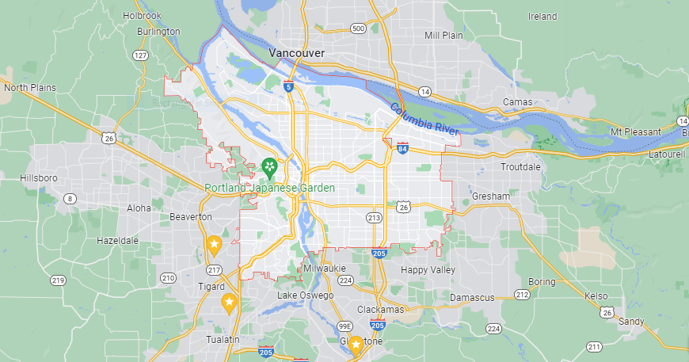

National Chapters

Scheduled Events
Group Repair
Portland Chapter
Meet with our experienced crew! We can assist with chain tightening, tire swap, and maintenance care. Learn while chatting in a relaxed and friendly setting. We can also provide resources on good deals on bicycle equiment and tools, upon request.
2K Hooray
Seattle Chapter
Let's train our endurance together! This 2K runs parallel to the scenic Puget Sound. We chose a 2K over a 5K to lower the percieved barriers to entry for this activity. You may always choose to bike further, if desired.
Cycle Central Park
NYC Chapter
Bike around the park with us! Our guides can give you and audio history of the park and statues as we all get swole!